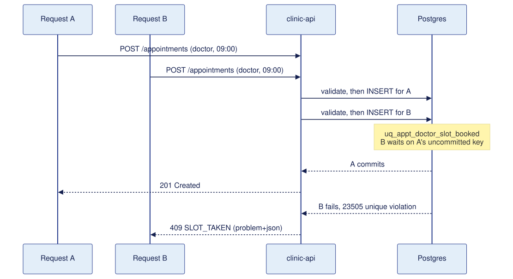

Technical design · Savannah Informatics assessment
A production-grade booking system, and the decisions behind it
| Author | Eric Gitangu |
|---|---|
| Date | 24 October 2026 |
| Version | 2.0 |
| Status | Ready |
| Repository | github.com/ericgitangu/clinic-booking, branch main at c59263e3; production serves v1.1.1 (68449dd) until the next release |
| Live system | https://clinic.ericgitangu.com |
This document describes the Idyllic Clinic booking system as built on main at c59263e3, with production serving the v1.1.1 release (68449dd) until the next successful release. The assessment brief is the business need. Each requirement and constraint in it gets an identifier in section 3, and each identifier is traced to design, code, test and production behaviour in section 13.
Two numbered lists are used. D1 to D13 (section 4) are the answers to the brief's open questions, traced to their tests in 13.2. Decision 1 to Decision 35 are the design decision records on https://clinic.ericgitangu.com/decisions, each at its own anchor (#decision-3 for Decision 3); "Decision N" in this document means that record. Where a figure is an estimate rather than a measurement, it says so.
The product name is Idyllic Clinic, and the seeded clinic is named "Idyllic Clinic" (migration 0011). The repository and the Cloud Run services keep the neutral clinic-* names.
"We run a small clinic with 5 doctors. Patients need to book appointments online. Each doctor has set working hours and works in 30-minute slots. A patient should see which slots are free for a given doctor on a given day, pick one, and book it. Once booked, that slot must not be available to others. Patients should also be able to cancel. We're starting small but want to grow."Savannah Informatics, Backend Developer Take-Home Assessment, Section 1
The brief joins four sections into one scenario: design (1), build a REST API in FastAPI, Django REST Framework or Go (2), deploy with CI/CD that auto-deploys on merge (3), and a written reflection on the tools used (4). The time limit is three to five days. Its rules say "Clear reasoning matters as much as working code."
| Who | What they need | What would hurt them |
|---|---|---|
| Patients | See free 30-minute slots for a doctor on a day, book one, cancel, move it. A clear message when something is refused. | Two people holding the same slot. A slot list that lies. A booking lost because a retry looked like a conflict. |
| Clinic staff (owner, admin, viewer) | One place to see the day's bookings as they happen, act on a booking, record who arrived, and tell the doctor. Access limited by role. | Patient data reaching people or services that do not need it. A dashboard that silently shows stale data. |
| Reviewers at Savannah Informatics | A public URL that works, a README that explains the design, a pipeline they can inspect, and behaviour they can check in minutes. | Behaviour that cannot be checked, an unreachable URL, design reasoning that only lives in code. |
main deploys, and a pull request runs the tests.I added one constraint of my own that the brief does not ask for: the running system should cost nothing. Section 11 states the one exception I accepted.
Every functional and delivery requirement in the brief is here, with an identifier. "Source" is the brief section. Text in quotation marks is the brief's own wording, verbatim; the rest is my paraphrase.
| ID | Source | Requirement |
|---|---|---|
| R1 | S1 | Five doctors, each with set working hours, working in 30-minute slots. |
| R2 | S2 | POST /appointments: book a slot. Validate that it "falls within the doctor's working hours, is not in the past, and is not already taken". |
| R3 | S2 | GET /doctors/{id}/availability: "Return all available 30-minute slots for a doctor on a given date". I read "available" as bookable now, so slots inside the 60-minute lead are left out (R8, 6.2). |
| R4 | S2 | PATCH /appointments/{id}/cancel: cancel "with a reason". "The slot must become bookable again." "Return an error if already cancelled." |
| R5 | S2 | PATCH /appointments/{id}/reschedule: move to a new slot. "The original slot must become available again, and the new slot must be validated as you would for a fresh booking." "Return an error if the appointment is cancelled." |
| R6 | S1 | "Once booked, that slot must not be available to others." My reading: this has to hold under concurrent requests, not only sequentially. |
| R7 | S2 bonus | GET /patients/{id}/appointments: "upcoming appointments sorted by date". |
| R8 | S2 bonus | "Prevention of bookings within 1 hour of now." |
| ID | Source | Requirement |
|---|---|---|
| R9 | S2 | Validation failures return "meaningful error messages with correct HTTP status codes". |
| R10 | S2 | Code is structured sensibly, not all in one file. |
| R11 | S2 | "Include at least basic test coverage for the booking logic." |
| R12 | S3 | Deployed to a cloud provider; "reachable via a public URL at the time of submission". |
| R13 | S3 | A CI/CD pipeline that "runs your test suite on every pull request". |
| R14 | S3 | It "automatically deploys when a PR is merged into a designated branch". |
| R15 | S1, S3, Instructions | A README with the system design (models, components, key decisions, trade-offs), how to run locally, the public URL, which branch deploys and how, and what the pipeline does. |
| R16 | S4 | A reflection answering the four Section 4 questions, in the README or a separate file. The brief adds: "Honesty here matters more than the answer itself." |
| R17 | Instructions | Links to the repository ("public or shared with us") and to the deployed, running application. |
| R18 | S1 | "Before writing any code, document your system design in your README." |
| ID | Source | Constraint |
|---|---|---|
| C1 | Cover, Rules | Assistive tools are permitted and expected, and their use is to be reflected on (R16). |
| C2 | Rules, S2 | "Use any database you prefer." |
| C3 | Rules | "When requirements are ambiguous, make a decision and note it in your README." |
| C4 | S1 | "We're starting small but want to grow." |
| C5 | S2 | Framework: FastAPI, Django REST Framework or Go. |
| C6 | Cover | Three to five days. |
| C7 | My own | The running system costs $0, proven against published free tiers. Not in the brief. |
C3 asks for a decision wherever the brief is open. Each row is the decision and its reasoning. Their tests are in 13.2.
| # | Open question | Decision | Why |
|---|---|---|---|
| D1 | What counts as "already taken" | Slots are a fixed, aligned 30-minute grid, so two bookings conflict exactly when they share a doctor and starts_at. | The brief fixes the slot length. Equality is enforceable with a unique index; overlap would need an exclusion constraint (Decision 3). |
| D2 | Whose "day" is "a given date" | The clinic's local day. The zone is data, clinics.timezone, seeded as Africa/Nairobi. | A patient means the clinic's calendar day. A second clinic in another zone needs no code change (Decision 5). |
| D3 | A datetime with no offset | Rejected as 422 TIMEZONE_REQUIRED. | Guessing a zone can book the wrong hour silently. |
| D4 | How far ahead a patient may book | At most 90 days (BOOKING_HORIZON_DAYS); beyond is 422 DATE_OUT_OF_RANGE. | Bounds the availability query and stops nonsense dates. |
| D5 | Cancelling or moving a visit that has started | 409 APPOINTMENT_ALREADY_STARTED. | The state is real but may not be changed; 409 is the status for "conflicts with current state" (Decision 8). |
| D6 | What the cancel reason must be | Required, 3 to 500 characters after trimming. Enforced in the schema and by a CHECK. | The brief says "with a reason". An empty reason is no reason. |
| D7 | What a reschedule is | An in-place update of the same row under a row lock, keeping the id. Rescheduling to the time it already has returns it unchanged. | The client keeps a stable id; the old slot is freed and the new one claimed in one transaction (Decision 8). |
| D8 | Which states exist | Appointment status is booked or cancelled only. Attendance (arrived, no_show) is a separate, append-only staff record and never changes the status. There is no completed state. | The brief does not track attendance. Keeping it out of the status leaves the booking index and the state machine untouched while staff still record who came (6.4). |
| D9 | What "upcoming" means | Booked, starting after now, ascending by start (ties by id). Limit 50 by default, at most 100, no pagination. | Cancelled visits are history, not upcoming. |
| D10 | Patients | The brief implies patients (the bonus takes a patient id) but defines no way to create one. I added POST /patients and a patients table; a patient may not hold two bookings at the same instant (409 PATIENT_DOUBLE_BOOKED). | A booking needs someone to belong to. One person in two rooms at once is a data error. |
| D11 | Who may cancel | Through the public API, anyone holding the appointment id. In the web apps, only the signed-in owning patient, or staff. | The brief is silent on authentication. I kept the public API open so Swagger's Try it out works for reviewers; that is my decision, not brief text. The cost is an IDOR, disclosed in section 11 (Decision 12). |
| D12 | Retries after a lost response | An optional Idempotency-Key on booking replays the original booking. | Otherwise the real booker's retry reads as "slot taken" (Decision 13). |
| D13 | Does the one-hour rule apply to changes | For a patient, cancelling, or moving away from, a visit that starts within the hour is 409 CHANGE_TOO_LATE. Staff are exempt from this rule only. | My extension of the bonus, not brief text. A late change is a property of the appointment's current state, so 409 (4.1). |
The brief's bonus says only "prevention of bookings within 1 hour of now". It says nothing about changes to an existing booking. Applying the rule to changes (D13) is my extension of the bonus, not brief text.
422 BOOKING_TOO_SOON.422 BOOKING_TOO_SOON: the new slot is validated as a fresh booking would be, which is exactly what R5 asks.409 CHANGE_TOO_LATE applies only when the CURRENT visit starts within the hour: cancelling it, or moving it away.Why the split. The status rule in 7.3 decides it. A too-soon target is a property of the request: resending it unchanged can never succeed, so it is 422, and it keeps the reschedule validation identical to booking. A too-late change is a property of the appointment's current state, so it is 409.
backend/tests/integration/test_one_hour_rule.py drives each case: test_book_boundary, test_cancel_boundary, test_reschedule_boundary_on_the_current_start, test_reschedule_boundary_on_the_new_start, test_both_starts_under_an_hour_answers_409_the_current_start_is_checked_first, test_availability_never_offers_a_slot_inside_the_window, and for staff test_staff_are_exempt_from_the_rule_the_patient_is_held_to and test_staff_reschedule_is_exempt_from_both_codes. The availability filter keeps test_slots.py::test_lead_filter_excludes_near_slots.
In production: /openapi.json lists CHANGE_TOO_LATE, and its problem type document is served at /api/problems/change-too-late.

68449dd. Every component shown is running in production. Rendered with mermaid-cli 11.4.2.
The last column names the decision records on clinic.ericgitangu.com/decisions, by number (Decision N is at #decision-N).
| Component | Role | Decision |
|---|---|---|
| clinic-web (Vercel) | Landing page, booking pages, server actions, the public /api proxy, the self-hosted /docs and the /decisions page. The only public entry point for patients and reviewers. | 10, 23, 27 |
| clinic-admin (Vercel) | Staff dashboard and access page. Allowlisted owner plus people the owner or an admin invites. Staff booking, veto and lock, attendance, the audit trail, live notifications and the doctor's arrival email (5.2). The live feed streams from clinic-realtime. | 27, 30, 33 |
| BFF and HMAC assertion | Every server-side call to the API carries a Google ID token (to pass Cloud Run IAM). Calls to /internal/* also carry an X-Internal-Assertion: HMAC-SHA256 over the caller, role, method, path, query and body hash, valid for at most 60 seconds; the API re-reads the role from the database. The public /api proxy forwards with the ID token only. | 30 |
| OIDC to WIF | Vercel's OIDC token is exchanged at Google STS, then IAM issues an ID token for the Cloud Run audience. The invoker role on clinic-api is held by three service accounts (web, admin, smoke) and on clinic-realtime by two (admin, smoke), with no allUsers binding. No service-account key is used. | 23 |
| clinic-api (Cloud Run) | FastAPI. Every business rule and every write. IAM-only (a direct request to its run.app address returns 403), min 0, max 3 instances, concurrency 80, 1 vCPU with CPU boost, 60 s timeout, us-east4. | 2, 14 |
| clinic-realtime (Cloud Run, Go) | The staff live feed over SSE. Reads appointment_events through the clinic_realtime role, which has column-level SELECT and nothing else (migration 0014), so staff events with names never leave Google Cloud. 0.25 vCPU, concurrency 1, 0 to 2 instances, at most 2 database connections per instance. A viewer gets the same events without name, reason or appointment id. | 9, 21 |
| Neon Postgres | The single store: Postgres 17 at 0.25 CU, in aws-us-east-1 next to us-east4. Runtime role clinic_app has no DDL. | 14, 15 |
| Outbox relay to Ably | appointment_events is written in the booking transaction; after each commit the API publishes "taken" or "freed" to slots:{doctor_id}:{local_date}, and the event type and times to admin:events. Neither carries a patient or appointment identifier. Patients subscribe with a 5-minute, subscribe-only token. Nothing subscribes to admin:events, because staff use clinic-realtime. Polling is the safety net. | 9, 31 |
| clinic-migrate | Cloud Run Job, run by digest on each release before the new revision: alembic upgrade head as clinic_owner, then the seed. | 15 |
| Secret Manager | Three database URLs (app, migrate, realtime), the internal and smoke signing keys, the Ably key: six secrets with one enabled version each. Mounted with --set-secrets. | 16 |
| Resend | Booking, move and cancel emails and a daily reminder from the booking app, only to verified linked Google accounts; staff emails and the doctor's arrival email from the admin app. Sent after the response with a 5 s abort. The day (100) and month (3,000) allowances are shared and reserved in the database before a send; every email but a booking acknowledgement stops 20 short of the day's limit (EMAIL_ACK_RESERVE). | 25 |
| reCAPTCHA Enterprise | One assessment per book, cancel and reschedule in the web app, called with the Vercel federated identity, so no key is stored. | 22, 29 |
| CircleCI: test and promote | Tests on every PR. On main, a keyless deploy (CircleCI OIDC to WIF, pinned to main in Terraform), and promotion of the tagged API revision only after verify_claims.py passes against it in ship-api. ship-realtime deploys the Go service the same way. | 16 |
| CircleCI: public verify and rollback | verify-release checks the public URL after both web deploys; four rollback jobs (API, realtime, booking, admin) act only if it failed and stand down otherwise. The traffic move is exercised by scripts/ci/test_ci_scripts.sh; no production rollback has been needed. | 16 |
staff_action_audit row in the same transaction. A veto undoes the patient's last change and locks the visit against further patient changes. Writes are throttled to 60 per person per 10 minutes.clinic-realtime through the admin app's /live/stream route, which signs the staff assertion. All tabs in one browser share one stream. Two streams can be open at once; a third viewer sees "Live feed busy" and the page refreshes every 30 seconds.appointment_attendance. The runtime role may insert and select only, so a correction is a new row with an audited reason. The appointment's status does not change (6.4).doctors.email on the doctor's card, an audited action (doctor_email). Marking a patient arrived writes one doctor_notification row in the same transaction; the admin app then claims it with a lease, takes one email from the shared allowance and records it sent, failed or skipped with a reason (no_email, allowance_day, allowance_month, demo_address, not_configured). Seeded doctors have no address, so nothing is emailed from seed data. The email names the patient by first name and last initial only. The address is shown to owner and admin, never to a viewer, and is in no public response./internal/admin/audit, doctor_email included; tests/integration/test_doctor_notice.py covers that read-back.
working_hours is a clinic-local window per doctor and ISO weekday; a CHECK pins both ends to :00 or :30. The seed gives each doctor their own weekly windows: Otieno 08:00 to 12:00 and 13:00 to 17:00 on weekdays; Kamau 09:00 to 17:00 on weekdays; Rotich 08:00 to 14:00 on Monday, Wednesday and Friday; Mwangi 10:00 to 18:00 on Tuesday and Thursday and 09:00 to 13:00 on Saturday; Njeri 07:00 to 11:00 Monday to Saturday.appointments carries CHECKs for the status set, ends_at = starts_at + 30 min, the half-hour grid, and cancel consistency (a cancelled row has a reason and a time; a booked row has neither).appointment_events is written in the same transaction as every change. It is the event history, the admin lineage view, the outbox and the source the Go service streams. Its txid xid8 column gives a commit-safe cursor.appointment_attendance (0010) holds staff marks, arrived or no_show; the latest row is the current mark. staff_action_audit (0009) holds every staff write with its actor, action and reason, and leaves patient name, phone and email out on purpose. doctor_notification (0017) records each arrival email, one per appointment and kind. doctors.email (0017) is nullable and normalised by a CHECK.clinic_app has SELECT, INSERT and UPDATE, no DELETE, and cannot rewrite alembic_version; on the attendance table it has INSERT and SELECT only.Slots are computed, never stored (Decision 4). Each availability request makes two indexed queries: the doctor's working hours, and the booked starts over the UTC range [D 00:00, D+1 00:00) of the clinic-local day. domain/slots.py then cuts each working window into 30-minute steps in UTC, de-duplicates by local wall time, subtracts the booked starts, and drops anything before now + 60 min (R3, R8). The slot function itself does no I/O; the pure domain package, which includes it, is held to 95% coverage by unit tests alone. Availability answers with an ETag and honours If-None-Match with a 304.
What I gave up: there is no slot row to lock, so uniqueness cannot live on the slot. It lives on the appointment, which is the next section.
Check-then-insert fails under concurrency, and SELECT ... FOR UPDATE cannot lock a row that does not exist yet. So the database decides:
CREATE UNIQUE INDEX uq_appt_doctor_slot_booked
ON appointments (doctor_id, starts_at) WHERE status = 'booked';
CREATE UNIQUE INDEX uq_appt_patient_slot_booked
ON appointments (patient_id, starts_at) WHERE status = 'booked';The service validates the request, inserts, and maps the unique violation (SQLSTATE 23505, by constraint name) to 409 SLOT_TAKEN or 409 PATIENT_DOUBLE_BOOKED. There is deliberately no "is it free?" pre-check: it would be a window for a race and adds nothing the index does not enforce. A cancelled row leaves the partial index, so the slot is bookable again (R4) while the history stays.

tests/concurrency/test_race_same_slot.py releases 25 concurrent POSTs for one slot at an asyncio.Barrier, holds each transaction open with a test-only pg_sleep(0.2), and samples pg_locks every 20 ms. It repeats over 10 slots (pool size 30, so all 25 are in flight). Per slot it asserts exactly one 201, 24 409s with SLOT_TAKEN and one booked row. Across the run it asserts a peak of at least 5 transactions waiting on another transaction's lock at once, so the test fails if it ever stops being concurrent.
The naive control (test_naive_control.py) is a raw check-then-insert (asyncpg, with pg_sleep(0.1) between the check and the insert), released at its own barrier against a separate database migrated the same way, with the doctor-slot index dropped. It asserts more than one booked row. That is what shows the index, not luck, is what holds.
A reschedule takes the row with SELECT ... FOR UPDATE and updates starts_at in place. If the new slot is taken the transaction rolls back and the original booking is untouched. A deadlock or serialization failure is retried once with jitter, then reported as 409 CONCURRENT_UPDATE.
cancelled is terminal; the loop on it is a refused request (409 APPOINTMENT_ALREADY_CANCELLED), not a third state. Attendance is not a state (below).Guards on every change, in order: the appointment exists (else 404), is not cancelled (409 APPOINTMENT_ALREADY_CANCELLED), has not started (409 APPOINTMENT_ALREADY_STARTED). For a reschedule, a request for the start it already has then returns the appointment unchanged (D7); otherwise the doctor must still be active (else 422 UNKNOWN_DOCTOR) and the new slot passes the same validator as a booking. The one-hour guard on the current visit (409 CHANGE_TOO_LATE) runs before the new slot is checked, for patients (4.1). A visit locked by a staff veto refuses further patient changes (APPOINTMENT_LOCKED).
Attendance is a staff record, not a state. arrived and no_show live in appointment_attendance, written only by staff, inside the window the API allows (else ATTENDANCE_WINDOW_CLOSED), and never on a cancelled appointment. The status stays booked, so the partial unique index, the availability query and the patient's view are unaffected by attendance.
timestamptz. The clinic zone is data; production returns "timezone": "Africa/Nairobi" on the clinic.timezone field.now(). Ruff bans datetime.now, utcnow and today outside core/clock.py, so tests pin time and pass on any weekday.Europe/Berlin. Slot stepping in UTC skips the spring-forward gap and de-duplicates the fall-back hour.REST with OpenAPI 3.1. The contract is committed at contracts/openapi.json, and CI fails if the code drifts from it. The public base is https://clinic.ericgitangu.com/api: the served spec declares servers: [{"url": "/api"}], and the Vercel proxy forwards it to Cloud Run. There is no /v1 prefix; a breaking change would add one (Decision 7).
The 14 public paths in the OpenAPI contract:
| Method and path | Purpose | Success | Brief |
|---|---|---|---|
POST /appointments | Book. Optional Idempotency-Key. | 201, Location | R2, R6, R8 |
GET /doctors/{id}/availability?date= | Free slots on a clinic-local day. ETag, 304. | 200 | R3 |
PATCH /appointments/{id}/cancel | Cancel with {"reason"}. | 200 | R4 |
PATCH /appointments/{id}/reschedule | Move with {"starts_at"}, same id. | 200 | R5 |
GET /patients/{id}/appointments | Upcoming, ascending. | 200 | R7 |
GET /doctors, GET /doctors/{id} | Doctors with clinic and working hours. | 200 | R1 |
POST /patients, GET /appointments/{id} | Create a patient; read one appointment. | 201, 200 | D10 |
GET /health, /ready | Liveness; readiness (SELECT 1). | 200 | R12 |
GET /problems, /problems/{slug} | The error catalogue, and one error type document. | 200 | R9 |
POST /realtime/token/patient | A 5-minute subscribe-only push token for one channel. | 200 | Beyond |
The /internal/* routes serve the two apps' server side (staff writes, attendance, the doctor's email, the audit trail) and need the signed assertion. The proxy refuses /internal in every spelling, so they are not callable from Swagger. A contract test checks that no public response carries a doctor's email.
Idempotency-Key (1 to 255 visible ASCII characters) is read on POST /appointments and scoped to the patient. The key and a fingerprint of doctor and time are stored on the appointment under a partial unique index. The same key with the same doctor and time replays the original 201 with Idempotent-Replayed: true, answered before validation, so a retry after the slot has passed still gets its booking. The same key with a different doctor or time is 422 IDEMPOTENCY_KEY_REUSED; a key whose appointment has left booked is 409 IDEMPOTENCY_KEY_CONSUMED. On any unique violation the key is re-checked before answering, because a lost response must never read as "your slot was taken" (Decision 13).
Every non-2xx is application/problem+json with type, title, status, detail, a stable machine code and a request_id that also appears in the logs. The catalogue is closed: 40 codes in the ProblemCode enum, and a unit test checks the domain errors, the handlers, the enum and contracts/api-errors.md against one list (Decision 6).
404: the resource in the path does not exist. 422: the request is well-formed but resending it unchanged can never succeed. 409: it conflicts with current state and might succeed later or in another state.
Main booking codes. The full list of 40, including validation, auth, staff, rate-limit and push codes, is in contracts/api-errors.md.
| Code | Status | When |
|---|---|---|
SLOT_IN_PAST | 422 | Starts at or before now (R2). |
BOOKING_TOO_SOON | 422 | New booking or reschedule target under 60 minutes away (R8, 4.1). |
OUTSIDE_WORKING_HOURS | 422 | The 30 minutes are not inside a working window (R2). |
SLOT_MISALIGNED, DATE_OUT_OF_RANGE, TIMEZONE_REQUIRED | 422 | Off the grid; beyond 90 days; no offset. |
UNKNOWN_DOCTOR, UNKNOWN_PATIENT | 422 | A missing or inactive doctor (including on a reschedule whose doctor was deactivated), or a missing patient. |
SLOT_TAKEN, PATIENT_DOUBLE_BOOKED | 409 | The unique index refused the write (R2, R6). |
APPOINTMENT_ALREADY_CANCELLED, APPOINTMENT_ALREADY_STARTED | 409 | Change to a cancelled appointment (R4, R5), or to a visit that has started (D5). |
CHANGE_TOO_LATE | 409 | Current visit starts within the hour, on a patient's cancel or reschedule (4.1). |
CONCURRENT_UPDATE | 409 | A deadlock survived one retry. |
APPOINTMENT_NOT_FOUND, DOCTOR_NOT_FOUND, PATIENT_NOT_FOUND | 404 | The path id does not exist. |
DB_UNAVAILABLE | 503 | Connection failure or pool timeout; retry shortly. |
Each row is a decision and what it costs. The decision records on https://clinic.ericgitangu.com/decisions weigh the alternatives in full; the number in each row is the record, at #decision-N.
| Decision | What I gave up | Why | Revisit when |
|---|---|---|---|
| A partial unique index decides double booking; no application lock (Decision 3) | Only correct for fixed, aligned slots. Variable lengths need EXCLUDE USING gist. | The database is the only place that sees every concurrent writer. The race test proves it. | Slot lengths vary, or overlapping services appear. |
| Slots computed, never stored (Decision 4) | No slot row to lock; two indexed queries per availability request. | Working hours change without a backfill; nothing to keep in sync. | Availability p95 rises, or slot-level metadata is needed. |
| A Go service serves the staff live feed; FastAPI keeps every write (Decisions 2 and 21) | A second language, image, CI job (go-quality) and deploy job (ship-realtime). Python cold starts are slower than Go's; I mitigate with CPU boost and have not measured it. | Staff events carry patient names and reasons, so they stay inside Google Cloud instead of a third-party pub/sub. Streams on their own service cannot take booking concurrency. A small image and a fast start fit a service that scales to zero. The Go service never writes and never decides availability. | More than two staff need the live view at once, or a second clinic. Then fan-out moves to Pub/Sub or Redis inside Google Cloud. |
| Cost shape of the Go service: concurrency 1 at 0.25 vCPU, max 2 instances, scale to zero, a "busy" answer for a third viewer (Decisions 14 and 21) | At most 2 staff streams at once. A third viewer sees "Live feed busy" and the page refreshes every 30 seconds. | An open stream bills its instance for as long as it is open. One connected hour at 0.25 vCPU is about 900 vCPU-seconds against roughly 21,619 of shared free headroom (an estimate, not yet measured). Cloud Run requires concurrency 1 below 1 vCPU. | Free CPU stops being the binding limit, or a clinic needs more than two live viewers. |
| Ably for patient slot events, because those events carry no personal data (Decision 31) | A third-party account and a data processor in the path; a 25,000-publish monthly budget I enforce myself (at most about 5 million delivered messages, under the free 6 million). | A slot event is "doctor, local date, start, taken or freed" and nothing that names anyone. admin:events also goes to Ably with the event type and times only, and nothing reads it. Events with names or reasons are served by clinic-realtime from Google Cloud and are never pushed to a third party. | Publishes near the budget, or a need to push anything personal to a patient. |
| Staff can book, move, cancel and veto, each with a reason and an audit row (Decision 33) | A locked visit can only be changed by staff. The audit table only grows, and it leaves patient identity out, so it shows what changed and not who the patient was. | A clinic needs to stop a patient bumping a visit it has planned around, and to know who did what and why. | Per-clinic roles, a second owner, or email volume near the limits. |
| Attendance and the doctor's arrival email sit beside the appointment, not in it (D8, 6.4) | A separate table and a notification record to read; one shared email allowance, so a busy day can use it up and the row then says so. No per-doctor preference, digest or bounce handling. | The booking lifecycle and its index stay untouched. A spent allowance or a missing address never undoes an arrival, and booking acknowledgements keep 20 a day in reserve. | A doctor who wants a digest, or real email volume. |
| UTC storage, clinic zone as data, naive datetimes rejected, injected clock (Decision 5) | One join to read the zone; clients must send offsets. | No guessed zones; deterministic tests. | Multi-zone clinics or per-doctor zones. |
| RFC 9457 errors with a closed code catalogue (Decision 6) | Every new error needs a catalogue entry, a test update and a docs row. | Clients branch on code, not on prose; reviewers see a stable contract. | A public client needs localised titles. |
| Reschedule in place under a row lock, one deadlock retry (Decision 8) | A two-way slot swap can end with both requests refused. | Stable id; atomic free-and-claim. | Swaps become a real workflow. |
| Cloud Run IAM-only behind a Vercel proxy, us-east4 beside Neon (Decisions 14 and 23) | An estimated 100 to 150 ms more per warm request for Kenyan users than Frankfurt (not measured), and three possible cold starts. | The one layout I could prove close to $0, with the database round trips kept short. | Real Kenyan users; then an African region for both compute and data. |
| The public API stays unauthenticated; the brief does not ask for auth (Decision 12) | An IDOR: anyone with an appointment or patient UUID can read or change it through /api. | I want Swagger's "Try it out" to work for reviewers. The web apps add Google sign-in and ownership checks. | Any real patient data. |
| CircleCI with keyless OIDC, promote by tag after a claims check (Decision 16) | Not GitHub Actions; a long-lived Vercel token per project. | GitHub Actions was unavailable on my account for a billing reason; CircleCI's OIDC gives keyless GCP access. | Vercel supports OIDC for deploys. |
| Real Postgres in every backend test, no mocked repositories (Decision 18) | Slower suites; a database in CI. | The guarantee lives in Postgres; a mock cannot test it. | Suite time blocks feedback. |
The rule I worked to: test the contract against the real thing, and do not trust a test I have not seen fail. Backend tests run against real Postgres 17 in CI; the browser tests run against the real API and database brought up with Docker Compose.
e82c278)| Layer | What it checks | Where |
|---|---|---|
| Unit (pure domain) | Slot grid, DST, validation order, idempotency fingerprints, error catalogue parity. | backend/tests/unit; pytest tests/unit with a 95% gate on app/domain |
| Integration | Every endpoint and error code on a real database: booking, availability, cancel, reschedule, clinic time zone, idempotency, problem shape, roles, staff writes, attendance, the doctor notification record and the audit read-back. | backend/tests/integration |
| Concurrency | Same slot (25 by 10), same patient, reschedule races, swap, cancel against reschedule, idempotency races, deadlock retry, racing vetoes. Plus the naive control. | backend/tests/concurrency; make test-race, make test-control |
| Contract | Schemathesis against the OpenAPI contract; no public response carries a doctor's email. Separately, the committed spec must equal a fresh export. | backend/tests/contract, job backend-contract; spec freshness in job backend-quality |
| Migrations | Upgrade on a clean database; roles and grants, including the read-only realtime role; expand-only lint. | backend/tests/migrations, scripts/migration_lint.sh |
| Go service | gosec, govulncheck and race-enabled tests against a real database: auth, limits, ordering, lifecycle. | services/realtime, job go-quality |
| API collection | The reviewer journey in Postman, run with newman: every status, content type and body against the contract. | collections/, job api-check |
| Browser, end to end | Booking: book, double book, cancel, cancel twice, reschedule, a past time, a time under an hour away, each typed error. Admin: roles, the live feed, live notifications, attendance and the doctor notification. | apps/booking/e2e, job e2e-real; apps/admin/e2e, job admin-e2e |
| Live, production | The claims check runs against each new API revision before it gets traffic; verify-release and smoke-public check the public URL after the web deploys. | scripts/verify_claims.py in ship-api |
e82c278): the main run is 1089 passed, 5 skipped at 96.36% coverage; the pure domain run is 402 passed at 98.07%; the concurrency run is 54 passed, including test_single_winner_per_slot; the control run is 3 passed, including test_naive_service_double_books_without_index.SLOT_TAKEN.test_slots.py fails the 95% domain coverage gate.pr workflow (10.1).The main branch deploys. Pull requests run the verify jobs only. A push to main runs the same jobs (without the PR-only dast) and then ships. The workload identity federation condition in Terraform admits only refs/heads/main in this repository and a job that uses the deploy context, so editing the config on a branch cannot deploy. The deploy contexts are also restricted to main in CircleCI's project settings.
The CircleCI project is public, so every run can be inspected: app.circleci.com/pipelines/github/ericgitangu/clinic-booking. The API is readable without a login too: GET circleci.com/api/v2/project/gh/ericgitangu/clinic-booking/pipeline?branch=main returns the pipelines and their job logs.
How long it takes. A pull request pipeline takes about 18 minutes and a release 28 to 29, set by the slowest jobs (e2e-real about 18 minutes, admin-e2e 11 to 13, backend-test 8 to 10). Every suite runs to the end and the job still fails if anything failed, so one red test does not hide the others. go-quality retries module downloads with a bounded backoff and caches them, with checksum verification left on.
| Stage | Jobs | Runs on |
|---|---|---|
| Verify | lint (markdown, TypeScript, ruff, mypy --strict), backend-quality (expand-only migration lint, single Alembic head, contract freshness), backend-test, backend-contract, ably-real, secrets (gitleaks), sast (semgrep), sca (pip-audit), build-scan (trivy), web-quality, e2e-real, admin-e2e, go-quality, api-check (newman), cost-static | Every PR (plus dast, ZAP) and every push to main |
| Build | build-scan-push and build-scan-push-realtime: images to Artifact Registry by digest | main |
| Ship services | ship-api: run clinic-migrate by digest; deploy clinic-api with --no-traffic --tag sha-<7>; run verify_claims.py against the tagged URL; promote only if the commit is still the head of main. ship-realtime does the same for clinic-realtime with its own smoke test. | main |
| Live cost guards | cost-check | main, after ship-api and ship-realtime |
| Ship web | build-booking, build-admin, then ship-booking, ship-admin (prebuilt Vercel deploys) | main |
| Verify release | verify-release: the public URL with no credentials, including /ready | main, after both web ships |
| Roll back | rollback-api, rollback-realtime (traffic to the previous revision), then rollback-booking, rollback-admin (Vercel alias to the previous deployment) | Every release; they act only when verify-release failed |
| After release | smoke-public (read-only), then zap-prod | main |
A release pipeline shows 51 jobs: the 31 configured jobs plus 20 serial-start and serial-end markers that keep the deploy jobs in one serial group, so two releases cannot interleave.
A release is a tagged, no-traffic Cloud Run revision that has to pass the claims check before it gets traffic. Going back is a traffic move, not a rebuild. Rollback refuses to move to the placeholder image, and refuses when something else has already moved traffic. .circleci/rollback.yml is the one-click version, and the rollback runbook is on the decisions page (#rollback). The image prune keeps the serving image and the rollback image and deletes everything else; a newer image is kept as in flight only when its tag is the current head of main.
Production runs v1.1.1, which is main at 68449dd. clinic-api and clinic-realtime both send 100% of traffic to the revision tagged sha-68449dd and keep the sha-e82c278 revision as the rollback target. Artifact Registry holds two images per service: the serving one and the rollback one.
Every running part sits inside a published free tier: Cloud Run compute and egress in a Tier 1 region, Neon Free, Vercel Hobby, Ably's free package (no payment method on the account), Resend's free limits enforced in the database, and CircleCI's free credits. cost_check.sh runs statically on every PR and live after each API deploy, and has a self-test that mutates the config to prove it fails.
The GCP project shares a billing account with other projects whose use has already exhausted the shared Artifact Registry and Secret Manager free tiers. This project's share is estimated at about $0.41 a month against a ceiling of $0.50 a month: six enabled secret versions at $0.06 are $0.36, plus about $0.05 of registry storage. Check C5 in cost_check.sh computes the share from the live secret count and fails if the ceiling is exceeded or the count cannot be read. Cloud Run compute and egress stay inside the free tier. A $1 alert budget (infra/billing/budget.tf) and a $3 Cloud Run spend cap (console-managed) stand behind it.
| Threat | Control | Residual |
|---|---|---|
| Direct calls to the services, bypassing the proxy | Both Cloud Run services are IAM-only, with no allUsers invoker; a direct request to the API gets 403. | None known. |
Forged staff calls on /internal or the live feed | Proxy denies /internal; the ID token passes IAM; the HMAC assertion binds caller, role, method, path, query and body for at most 60 s; the role is re-read from staff_access. The Go service checks the same staff assertion. | No replay store: a byte-identical request can be replayed inside 60 s. |
| Stolen deploy credentials | No GCP service-account key is used. CircleCI and Vercel exchange OIDC tokens through WIF conditions pinned to main and to the production projects. | The Vercel deploy token is long-lived. |
| Patient IDOR on the public API | UUIDs are unguessable; the web path checks ownership and answers 404 for others' appointments. | Accepted Anyone holding a UUID can act on it through /api; a duplicate phone reveals that a number is registered. |
| PII leaking to third parties or logs | Ably events (slots:* and admin:events) carry no identifiers. Staff events with names are served by clinic-realtime inside Google Cloud, and a viewer gets them without name, reason or id. Logs carry a request_id and no PII. Patient email goes only to verified linked accounts; the doctor's email gives first name and last initial only. A doctor's address is shown to owner and admin and is in no public response. | Resend keeps sent-mail records under its own retention. |
| Privilege escalation in the database | Runtime role has no DDL and no DELETE; migrations use a separate role and secret; the Go reader has column-level SELECT only; attendance and audit rows cannot be edited by the runtime role. | None known. |
| Supply chain and secrets in code | gitleaks, semgrep, pip-audit, gosec, govulncheck, trivy image and config scans, ZAP; base images pinned by digest. | Findings below the gate thresholds pass. |
429 RATE_LIMITED; a monthly publish budget turns push off (503 REALTIME_UNAVAILABLE) and the page polls.scripts/ops/kill_switch.sh) and a production ZAP baseline.Structured logs with a request id on every line and in every problem body, no PII. A Cloud Monitoring egress alert policy exists and is one of the live cost guards. Deploys are recorded as CircleCI deploy markers.
These are estimates from the configuration, not load-test results; latency and throughput have not been measured.
| Scale | What breaks first | What I would do |
|---|---|---|
| Today (1 clinic, 5 doctors) | Cold starts: up to three in a row (Vercel function, Cloud Run, Neon) on the first request after idle. Two staff can watch the live feed at once. | Accept for a demo. min-instances 1 is the knob when latency matters more than $0. |
| 10x (about 50 doctors, a few clinics) | Database connections. Each API instance holds a pool of 5 against Neon's direct endpoint; at max 3 instances that is 15. The Go service adds up to 4 (2 per instance, 2 instances), 19 in total, and because it polls every second, Neon would not suspend while anyone watches. Two live viewers will not be enough. | Neon's pooler (needs asyncpg's statement cache off; unverified here). Add clinic_id scoping to every query and test tenant isolation. Move staff fan-out to Pub/Sub or Redis inside Google Cloud. Paid tiers end the $0 rule. |
| 100x (hundreds of clinics) | One Postgres primary is the ceiling. The proxy's per-instance rate limit stops meaning anything. Per-instance stream polling scales linearly with viewers. | A read replica for availability before any sharding (the unique index contends only per doctor and slot, so it does not serialise unrelated bookings). A shared rate-limit store. Authentication on the public API. One relay publishing to a pub/sub for the live feed. |
| Risk | Likelihood | Mitigation, or what I accept |
|---|---|---|
| Public URL unavailable after a release | Low | The API only gets traffic after the claims check passes on its tagged revision; the public verify and the automatic rollback after it run on every release. The traffic move is tested in CI but has not been needed in production; the runbook covers the manual path. |
| IDOR on the public API | Certain | Accepted and disclosed; demo data only; review trigger is any real patient data. |
| Shared billing exhausts more free tiers | Medium | Alert budget, spend cap, live cost guards; the estimate stays under the $0.50 ceiling (11.1). |
| A rare double refetch in the live path | Low | The test "(b) a cancellation frees the time after one refetch" in apps/booking/e2e/realtime.spec.ts is intermittent: it sometimes sees two refetches. The cause is not yet established. Booking correctness does not depend on it, because the database decides. |
| Documentation drifts from the code | Medium | Catalogue and contract tests fail on drift between the code, the OpenAPI contract and contracts/api-errors.md. |
| Variable slot lengths requested | Low | Migrate the unique index to an exclusion constraint on a time range. |
Backend paths are relative to backend/ unless they start with a top-level folder. "Live" URLs are under https://clinic.ericgitangu.com unless given in full.
| ID | Design | Implementation | Test | In production | Status |
|---|---|---|---|---|---|
| R1 | 6.1 | app/scripts/seed.py; migrations/versions/0001_initial.py (working_hours) | tests/integration/test_doctors.py::test_list_doctors_active_sorted, ::test_get_doctor_ok | /api/doctors (5 doctors) | Met |
| R2 | 6.2, 6.3, 7 | app/services/booking.py::book; app/domain/booking_rules.py::validate_slot | tests/integration/test_post_appointments.py | /docs, POST /appointments | Met |
| R3 | 6.2 | app/domain/slots.py; app/api/routers/doctors.py | tests/unit/test_slots.py; tests/integration/test_availability.py | /api/doctors/{id}/availability?date= | Met |
| R4 | 6.3, 6.4 | app/services/booking.py::cancel | tests/integration/test_cancel.py | /docs, PATCH cancel | Met |
| R5 | 6.3, 6.4, 4.1 | app/services/booking.py::reschedule | tests/integration/test_reschedule.py (cancelled 409, outside hours 422, taken slot 409); test_availability.py::test_book_cancel_and_reschedule_move_a_time_between_slots_and_taken; tests/concurrency/test_race_reschedule.py, test_race_swap.py | /docs, PATCH reschedule | Met |
| R6 | 6.3 | 0001_initial.py (uq_appt_doctor_slot_booked); app/repositories/errors.py | tests/concurrency/test_race_same_slot.py; test_naive_control.py | 20 parallel bookings of one slot on 2026-10-18: 1 x 201, 19 x 409 | Met |
| R7 | 4 (D9), 7 | app/api/routers/patients.py; app/repositories/appointments.py::upcoming_for_patient | tests/integration/test_patient_appointments.py | /docs, GET patient appointments | Met |
| R8 | 4.1 | app/domain/booking_rules.py (BookingTooSoon); app/domain/slots.py lead filter | tests/integration/test_post_appointments.py::test_booking_too_soon; tests/unit/test_booking_rules.py; tests/unit/test_slots.py::test_lead_filter_excludes_near_slots; apps/booking/e2e/booking.spec.ts | /openapi.json lists BOOKING_TOO_SOON | Met |
| R9 | 7 | app/domain/errors.py; app/core/problems.py; contracts/api-errors.md | tests/unit/test_error_catalogue.py; tests/integration/test_problem_shape.py | /openapi.json ProblemCode (40) | Met |
| R10 | 5 | app/{api,services,domain,repositories,models,schemas,core}; services/realtime/internal | ruff, mypy in lint; go-quality | Repository tree | Met |
| R11 | 9 | backend/tests/ | Coverage gates 85% and 95% in .circleci/config.yml | 1,089 passed, 96.36% coverage (9.1) | Met |
| R12 | 5, 10 | .circleci/config.yml (ship-api, ship-realtime, ship-booking, ship-admin) | scripts/verify_claims.py; verify-release | /, /docs, /api/health all 200 | Met |
| R13 | 10 | .circleci/config.yml workflow pr | The workflow itself | 16 jobs on every pull request | Met |
| R14 | 10 | Workflow release; infra/terraform/wif.tf | scripts/ci/test_ci_scripts.sh | Each merge to main ships four services | Met |
| R15 | All | README.md sections 1 to 12; the decisions page (35 records) | make lint (markdownlint) | GitHub README; /decisions 200 | Met |
| R16 | n/a | README.md section 11, "AI reflection" | n/a | GitHub README | Met |
| R17 | 1 | README.md Start here and section 1 | n/a | Public repository; / 200 | Met |
| R18 | 1 | The decision records on the decisions page; README.md system design sections. The decision records preceded the code; the README design section followed the first code commit. | n/a | /decisions | Partial |
| C1 | n/a | As R16 | n/a | n/a | Met |
| C2 | 6, 8 | Postgres (Decisions 2 and 15); migrations/versions/ | tests/migrations | /api/doctors reads it | Met |
| C3 | 4 | README.md section 8; the decisions page | n/a | n/a | Met |
| C4 | 12 | clinics.timezone as data; doctors.clinic_id | tests/integration/test_clinic_timezone.py | n/a | Met |
| C5 | 5 | FastAPI, app/main.py; Go for the read-only live feed | Every backend test; go-quality | /openapi.json | Met |
| C6 | n/a | A schedule constraint, not a property of the code | n/a | n/a | n/a |
| C7 | 11 | scripts/cost_check.sh; infra/billing/budget.tf | scripts/cost_check_selftest.sh | cost-check after each API and realtime deploy | Accepted shared billing (11.1) |
| D | Test |
|---|---|
| D1 | tests/concurrency/test_race_same_slot.py; tests/integration/test_post_appointments.py::test_slot_misaligned_seconds |
| D2 | tests/integration/test_clinic_timezone.py |
| D3 | tests/integration/test_post_appointments.py::test_timezone_required |
| D4 | tests/integration/test_post_appointments.py::test_date_out_of_range |
| D5 | tests/integration/test_cancel.py::test_cancel_already_started_409 |
| D6 | tests/integration/test_cancel.py::test_cancel_reason_too_short_422 |
| D7 | tests/integration/test_reschedule.py::test_reschedule_ok, ::test_reschedule_same_start_noop |
| D9 | tests/integration/test_patient_appointments.py |
| D10 | tests/integration/test_post_appointments.py::test_patient_double_booked |
| D12 | tests/unit/test_idempotency.py; tests/integration/test_idempotency.py; tests/concurrency/test_race_idempotency.py |
| D13 | tests/integration/test_one_hour_rule.py, including the two staff exemption tests |
D8 is held by the schema: ck_appt_status (0001_initial.py) admits only booked and cancelled, and attendance is a row in appointment_attendance (0010_attendance.py), which the app role may only insert and read (tests/integration/test_attendance.py::test_attendance_rows_cannot_be_edited_by_the_app_role). D11 is the absence of auth on /api and has no test of its own.
| Kind | Limit | What removes it |
|---|---|---|
| Accepted | The public API is unauthenticated, so the IDOR in 11.2 stands. | Authentication on the API before any real patient data. |
| Accepted | At most two staff can watch the live feed at once; a third sees "Live feed busy" and the page refreshes every 30 seconds. | Pub/Sub or Redis fan-out inside Google Cloud. |
| Accepted | Shared billing cost on the GCP project (11.1). | A billing account of its own, or fewer secret versions. |
| Not observed | The doctor's arrival email is covered by tests but has not been delivered to a real inbox; seeded doctors have no address. | Set a test doctor's address, mark an arrival, check the inbox. |
| Not observed | The daily reminder runs, but a production send has not been seen in the Resend log. Booking and cancellation emails are delivered in production. | Check the Resend log after a 15:00 UTC run. |
| Not measured | The cost of one connected hour on the Go service (the estimate is in section 8). | scripts/ops/measure_realtime_cost.sh |
| Defect | An intermittent test: "(b) a cancellation frees the time after one refetch" in apps/booking/e2e/realtime.spec.ts sometimes sees two refetches. The cause is not yet established. | Root cause, then a fix with a test that fails first. |
| Defect | Largest contentful paint on /book is 2.80 s on mobile Lighthouse locally, over the 2.5 s budget. | Load the header menus on demand. |